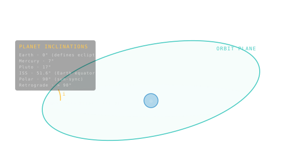

Inclination
The tilt of the orbit plane relative to a reference plane — usually the ecliptic or Earth's equator.

101 · zoom in
Hold a dinner plate flat in front of you — that's the reference plane. Now tilt it. The angle you tilted by is inclination. That's the whole concept. Every orbit lives on its own tilted plate.
It matters because changing inclination is brutally expensive in fuel. If you launch a rocket from Florida, the Earth is already spinning eastward at 0.4 km/s — you get that for free if your orbit goes east. Try to launch into a polar orbit instead and you don't just lose the freebie, you have to fight against it. Picking your inclination at launch is one of the biggest decisions a mission makes; you almost never want to change it later.
This is why the ISS sits at 51.6° — that's the angle you have to launch at if you want to reach it from Russia's launch site at Baikonur. Why imaging satellites go polar — they need to fly over every latitude. Why GEO comsats sit on the equator — so they hover over the same patch of ground forever. Each inclination is a deliberate choice with a fuel bill attached.
Inclination (`i`) is the angle between the orbit plane and a chosen reference. For a heliocentric orbit, the reference is the ecliptic — the plane Earth orbits in. For Earth-orbiters, it's usually the equator. The angle is measured at the ascending node, where the orbit climbs through the reference plane heading north.
Most planets sit close to the ecliptic — Earth defines it (`i = 0°` by construction), and the rest stay within a few degrees. Mercury at 7° is the outlier. Pluto's wild 17° is one of the reasons it got demoted: real planets stay nearly co-planar.
For Earth satellites the inclination story is different and pragmatic. Equatorial (0°) for geostationary comsats. ~28° for Cape Canaveral launches that need to ride the Earth's spin. ~51.6° for the ISS — chosen so Russian crews can launch from Baikonur. Polar (~90°) for Earth-imaging satellites that need every latitude. Sun-synchronous (~98°) for science platforms that want consistent lighting on every pass.